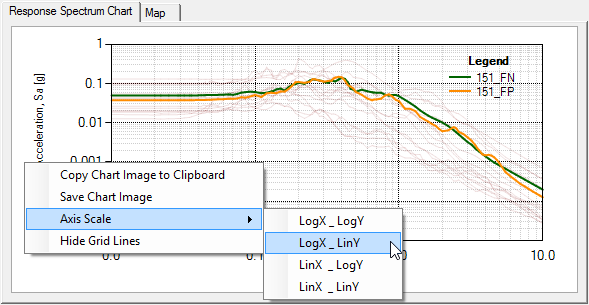

Engineering Thesis (2013)
Title:
Usability testing of application programming interface for SAP2000
About:
The SAP2000 Application Programming Interface (API) was developed to enable a two-way link between the SAP2000, which is a general-purpose structural program, and other software. In the context of this thesis, the possibility of using the API to enhance the performance within the SAP2000 program and to develop new, more specific software tools based on SAP2000 is examined. In the first part of the thesis we present the application programming interface, the implementation of programming languages and technologies used for the production of software, along with theoretical backgrounds of structural dynamics. The second part demonstrates the potential of the API based on applications, which were developed for the purpose of this thesis. The thesis concludes with insight into applications, which can be developed using the SAP2000 API. It was found that the SAP2000 API makes it possible to develop applications which enhance user interfaces and functionality of the SAP2000 and allow further automation of analysis processes and parametric studies. These applications can significantly facilitate tasks, associated with the design of structures. Furthermore, the optimized functionality and analysis processes enables new, more detailed studies, which are otherwise quite time-consuming in terms of preparing information, which are required for analysis of structures.
Download:
Thesis and all the software (excluding SSPA plug-in) can be downloaded from here
Special thanks to:
Mentor: Matjaž Dolšek | Comentor: Matevž Dolenc | Robert Klinc
Software:
SSPA plug-in
SSPA (Scenario-based Seismic Performance Assessment) is a comprehensive SAP2000 plug-in for dynamic analysis based on seismic scenarios, which can be defined by the magnitude, source-to-site distance, soil type and some other parameters of earthquakes. The plugin is supported by a database, which includes the ground motions from the PEER strongmotion database.
-

TODO opisi slik
- 
-

-

Modal analysis program
Program application is a robust tool for modal analysis of simple structures, which is integrated in Microsoft Excel.
Other examples
This simple examples show how SAP2000 API can be used with other software (e.g. Rhinocerus3D with Grasshopper plugin, Matlab) to interact with SAP2000 program.